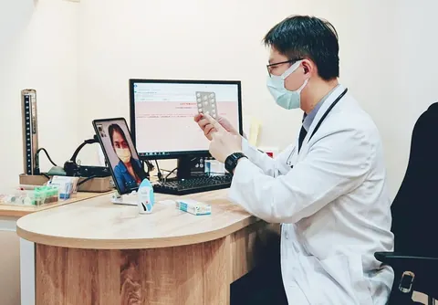
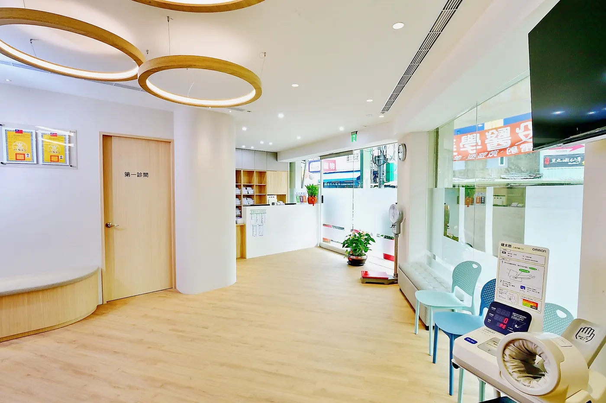
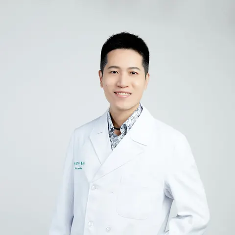
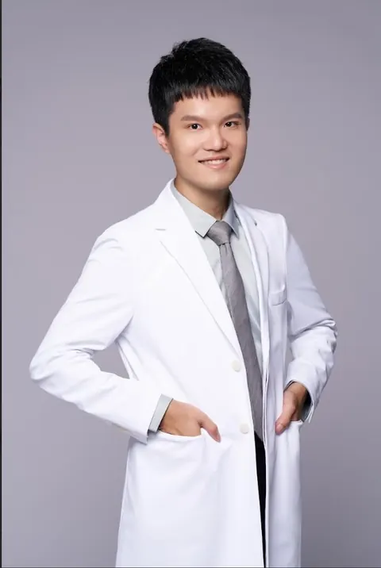

家醫科／院長
林禹喬醫師
- 台灣大學醫學院學士
- 馬偕紀念醫院家庭醫學科總醫師
- 超音波醫學會會員
- 糖尿病、腎臟病、代謝症候群照護網責任醫師
新北市三重區・仁愛街 517 號

01Clinic Hours
早診、午診、晚診，一週七天都有門診。彩色字是當班醫師，紫點代表皮膚科陳律安醫師同時段看診。
02Our Doctors
家醫科與皮膚科醫師，陪您照顧一家人的健康。

家醫科／院長
家醫科

皮膚科主治醫師

家醫科
03Services
從感冒到三高、從健檢到體重管理，一次在社區診所處理好。
高血脂、高血壓、高血糖、痛風
健康減重門診、體重管理
前往健康減重衛教專區全腹部、甲狀腺、頸動脈超音波檢查
急性症狀如感冒與腸胃炎
成人健檢、癌症篩檢
04The Clinic
「舒適與專業並重」，是我們對就診環境的堅持。
候診空間寬敞明亮，柔和燈光與舒適座椅，讓等待也能放鬆。
檢查設備完整：心電圖、血氧機、腹部、甲狀腺與頸動脈超音波、多槍式耳鼻喉治療台與自動血壓計；二樓另設醫美中心，備有多種美療與雷射設備。
診療空間重視隱私與便利，環境每日以紫外線消毒燈清潔，為每一位患者與醫護人員守護安心、安全的就診環境。
05Getting Here
停車可停加油站旁邊的 Times 停車場。